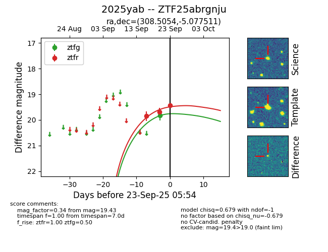
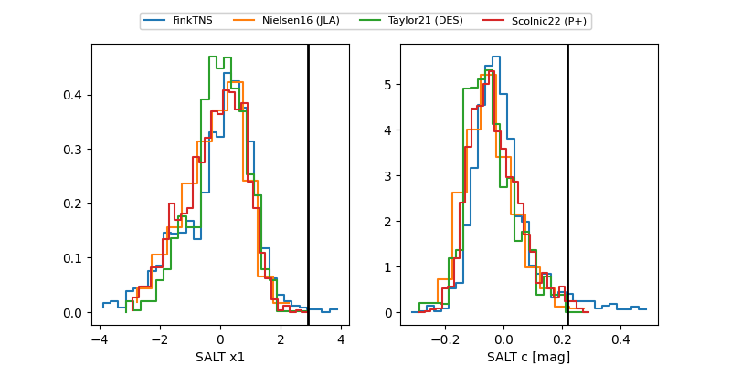

FINK: ZTF25abrgnju
Lasair: ZTF25abrgnju
ALeRCE: ZTF25abrgnju
TNS: 2025yab
YSE: 2025yab
ZTF25abrgnju (ztf,fink)
2025yab (tns,yse)
equatorial (ra, dec) = (308.5054,-5.07751)
galactic (l, b) = (40.4065,-25.08980)


last ztfg=19.83, ztfr=19.43
1 ztfg, 3 ztfr detections